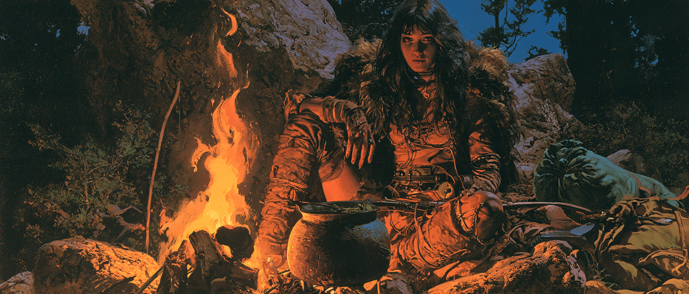

Act III, Chapter XL
The common chamber was quiet when Galand and Vaerek entered, exhausted. Filibeth was there, awaiting Galand’s return. Pethengorom recovered in his chamber. Saoirse was asleep and awoke to their entering the central pool. Cadarinost’s death sat foremost in Vaerek’s mind; Heldranc’s anguish and Montmorian’s grief still moved in him.
The next day, Vaerek went to Montmorian in his sanctum, who was in silent grief. He spoke his condolence for the twin. They had hatched together and never been far apart, and Montmorian had watched him die with nothing in his power to stop it. Wars between kingdoms at least declared themselves. This one did not. They named Eig and named the dark and still did not know what either wanted. This ignorance had already taken Rallice in the Winterlands and now nearly two more in the sands. They could not carry that same blindness into the Farland.
Vaerek asked that the dragonlords remain behind. If a slayer hunted their kind, the last of them should not walk the road. Montmorian accepted the warning, agreed that they could not delay, and asked to be left.
Telorin tended his workshop in the days that followed. Rallice’s absence made the work quieter than it should have been. Over the next couple of days, he took Galand’s maul and bound into it stronger runes. Saoirse came while he worked and asked what the leaf had been like in his hands. He explained that he had begun to lose himself in it before Filibeth reached him. She also asked whether they could set down on paper what she had done to cleanse herself of curses, against the chance that the Scourge had taken Darcdressil.
On the third day they gathered in the throne room. Heldranc would not watch fear take another of his children. Two roads remained: the Depths, for Darcdressil, or Far Nybei, for Thalancord. Pethengorom stood hooded at the side, well enough now to speak, one forearm gone. He spoke that the Current over Nybei was wrong. Souls there burned too brightly — not dim as the Host, not bright as Filibeth or Galand, only disturbed. He would set them down near the one that still looked as a soul should. They might find Thalancord as they had found Cadarinost: by following his enemy.
Vaerek said again that the lords should not travel. Heldranc agreed and forbade the Lords from leaving the sanctuary. Pethengorom would remain and learn how Eig moved. Heldranc wished for he and Aszurithice to bring Cadarinost home from the sand and lay him in the tomb beneath Nathalor — but for now, this was too dangerous. Saoirse asked a place in the city also for the phantoms who had served Cadarinost; it was granted.
Perstrin stated he could now recall them back to the sanctuary, but he did not possess the power to read the Current as Pethengorom. Saoirse called Aoife. The green gate opened. They stepped through into autumn.
They came out at the edge of a village under trees that twisted as they rose. Woodsmoke hung in the air. A man stood over the dead and watched them arrive. Vaerek smelled blood and drew Valeburn. No one among them spoke the man’s tongue. Telorin used a scroll of tongues, and understood him alone.

He named himself Kojin En, a swordsman of the Remnants of Thalane. Redroot Village had fallen to the curse, and he and his group had cleared it. The dead were fresh but unnatural — burned, lidless, orange eyes, rotting while still warm. No magic remained on them. Telorin mentioned Thalancord. Kojin struck his chest at Thalancord’s name and said he sought him also. These, he told them, were victims of Olesh. They attempted speech with difficulty.
He offered his camp. They walked an hour into the countryside of somewhere in Kaiden, through mist and turning leaves. He named the others as they came into view: Baiji En, his wife; Hanto Han, a warrior of Kaiden; Silar Scorria, a dragon scholar; and Yuo Nanaga, an archer.
Speech failed them until Vaerek tried Draconic. Silar answered it. He was a scholar of dragons and knew the name they carried. Thalancord was known as the Sun Gold Drake. Thalane, the once-lord of their order, had been Thalancord’s teacher. From his name, Thalancord took his, and upheld the duty to defend Nybei against curse and terror. They were unsurprised that the Kindred had come from across the sea, and they were not afraid of what that meant.
Silar gestured them to the fire. If they sought the Sun Gold Drake, there was more to say.
